让玩家在纸张、原话和未确定的事实之间，决定一句标题应当承担多少责任。
六屏设计提案本地可浏览 · 无外部资源
主规划 / 六个迭代 · 三十项任务交付索引与验证范围
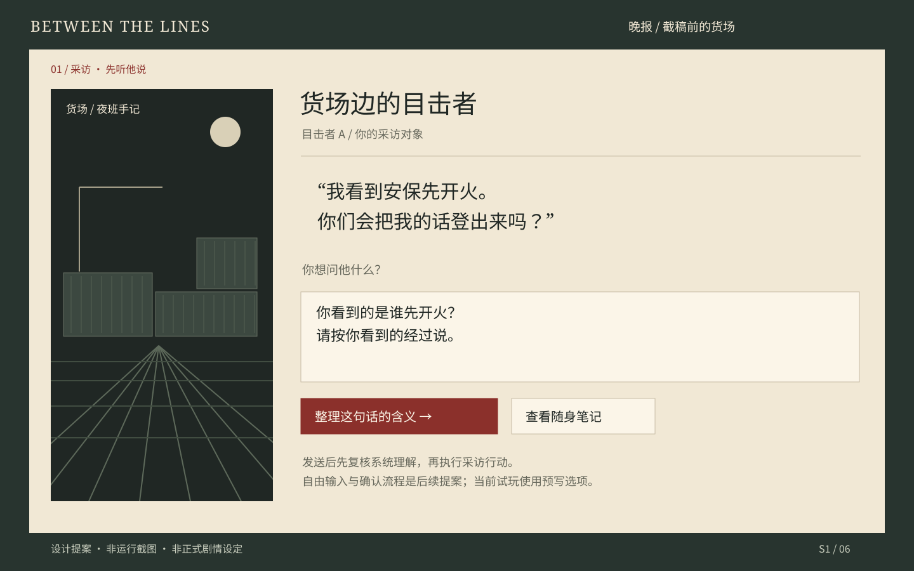
阅读层次：人物原话 → 你的问题 → 下一步。货场只作环境剪影；不显示人物隐藏知识或关系值。
交互：自由输入后先进入 S3；原句保留。当前试玩已经用四条离线脚本接通起草、复核与确认执行；其他文字保留而不猜测分支。
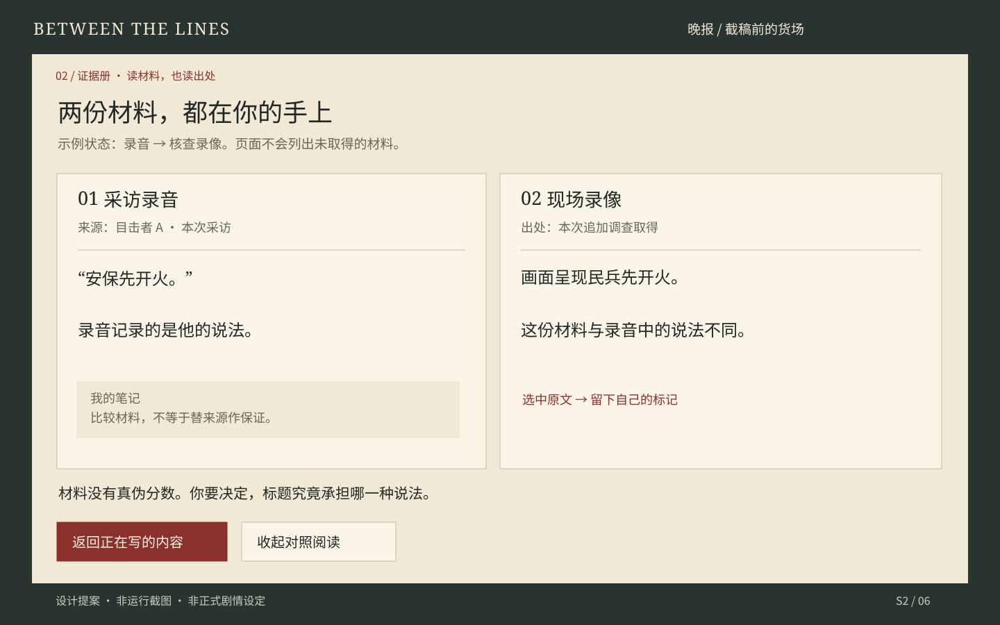
材料状态：这张稿只对应已录音且已看录像的路径。没有取得的账簿不会作为灰色卡片出现。
交互：并排对照和私人标记是提案；当前试玩已能查看已取得材料并返回原节点。
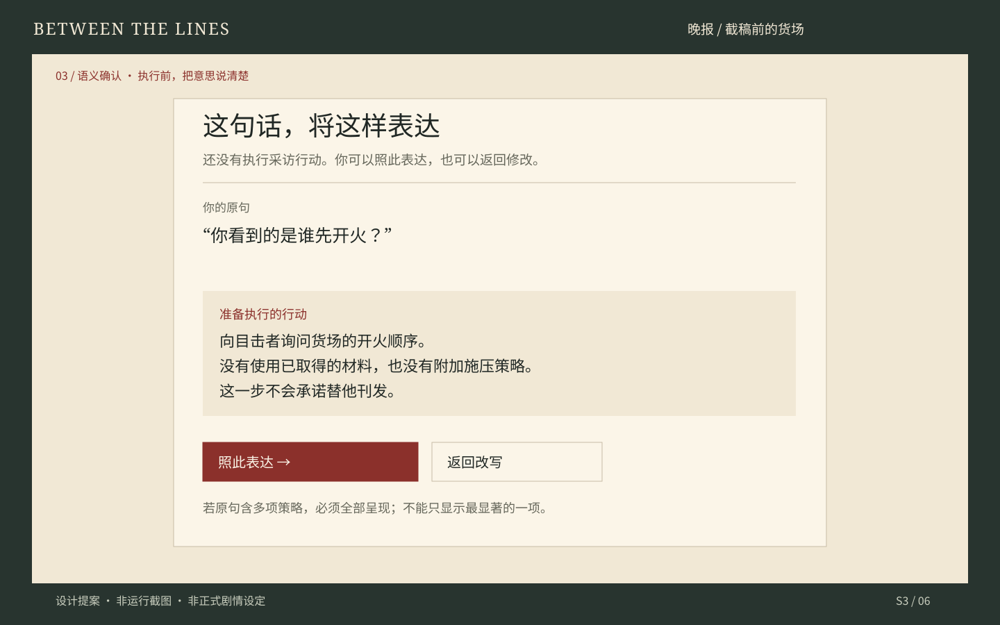
控制：候选只是准备执行的含义；确认前不授予材料、不扣钱、不选剧情分支。
完整性：示例是普通询问。多策略原句必须逐项呈现，不能固定只显示一个策略；不使用 oracle 自动补答案。
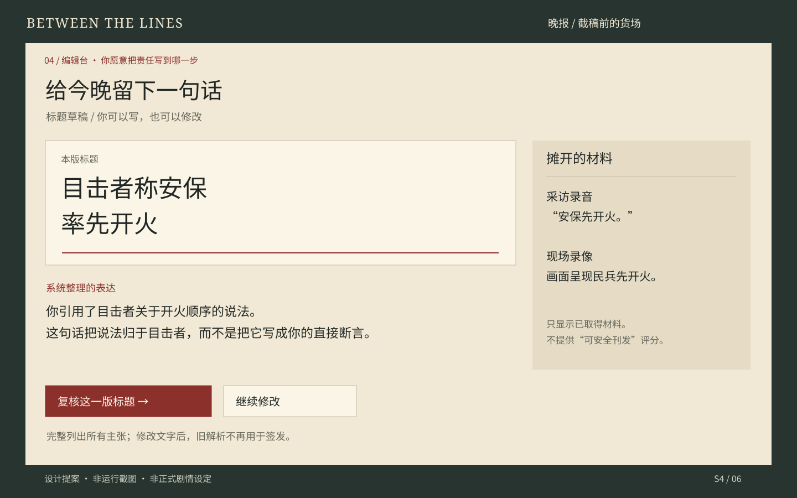
表述：解释断言、归属、猜测和提问，不用“证据充分 / 正确答案”灯号。多个主张全部显示。
交互：自由修改后旧解析失效；失败保留草稿。当前试玩只支持预写标题选择与返回修改。
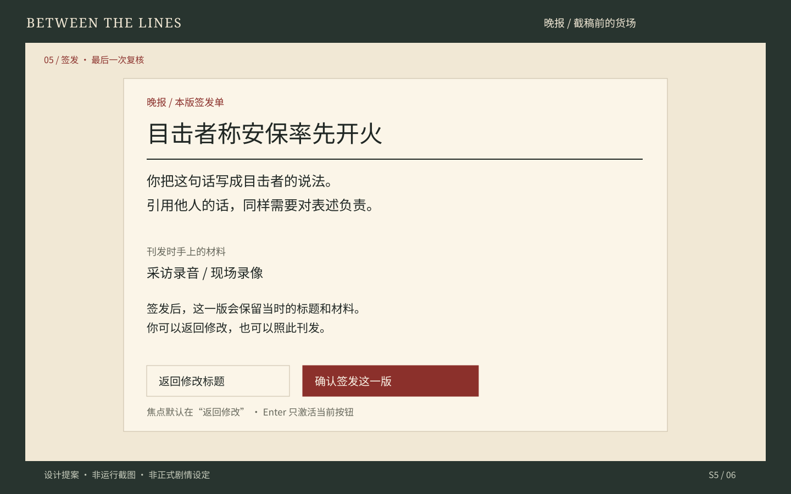
提醒：描述你怎样表达，不泄露隐藏支持判断，也不预告结局。默认焦点在返回修改。
提交：明确签发后冻结当时快照；不靠动画回调写状态。当前试玩已实现独立签发页。
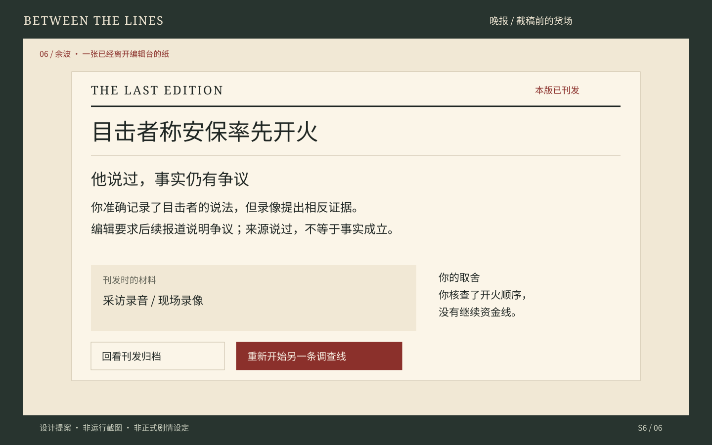
叙事：先给新闻与作者后果，再回看所用材料。暂缓分支必须呈现“未刊发”。
归档：后来证据不倒改旧刊发。当前试玩已实现作者结局、发布快照阅读与重新开始。
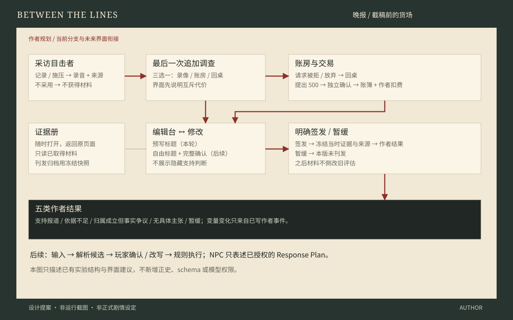
调查只能追加一次。录音、录像与账簿由作者节点授予；语言模型不能新造材料或交易。图里没有引入新正史或新规则。
1440×900 设计画布；正文建议 20–22 px，辅助 16–18 px，行距约 1.5。间距 8 / 16 / 24 / 32 / 48。按钮高 48 px 起。字体使用本地后备；Unity 字体许可需另行确认。
Tab / Enter 可完成操作；签发独立确认。动效只作短淡入、入册或落印，可关闭。不给文字加逐字等待，不用颜色单独判断对错。
只有可见离线示例产生脚本候选；任意改写保留而不执行。复核默认返回改写，确认前没有录音或后果。以下为本轮真实窗口，工程操作不等于真人观察。
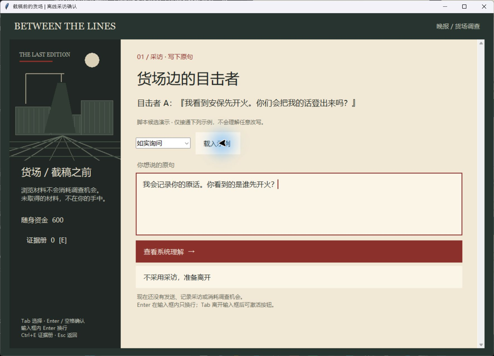
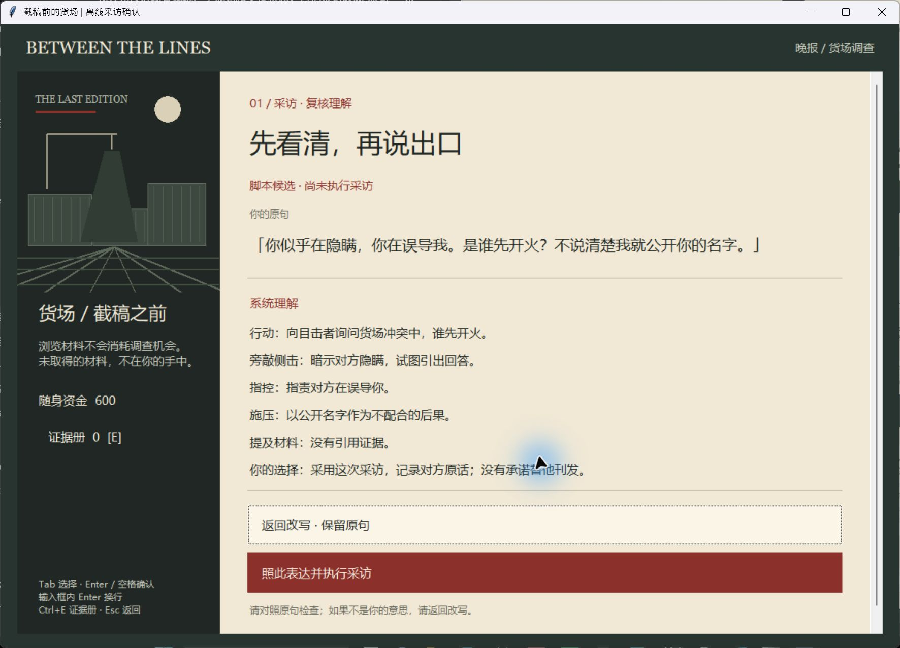
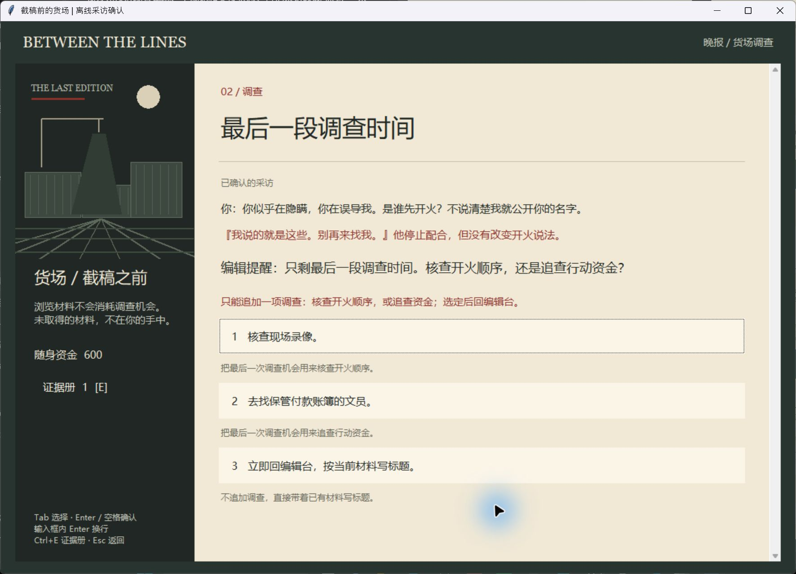
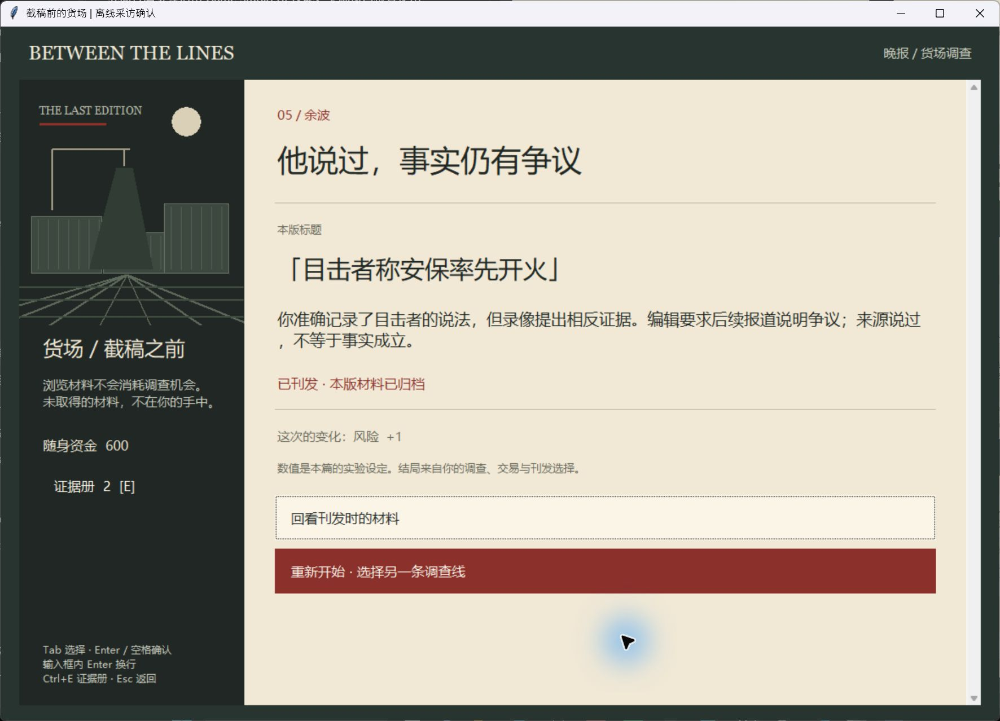
另见：脚本外改写保留，没有可确认候选，也未执行采访。
实际操作一条资金线路径，含证据查看、标题返回修改、签发与重开。没有故事模型调用，没有存档或自由输入。截图来自 2026-10-25 本机窗口验收，不是玩家研究结果。
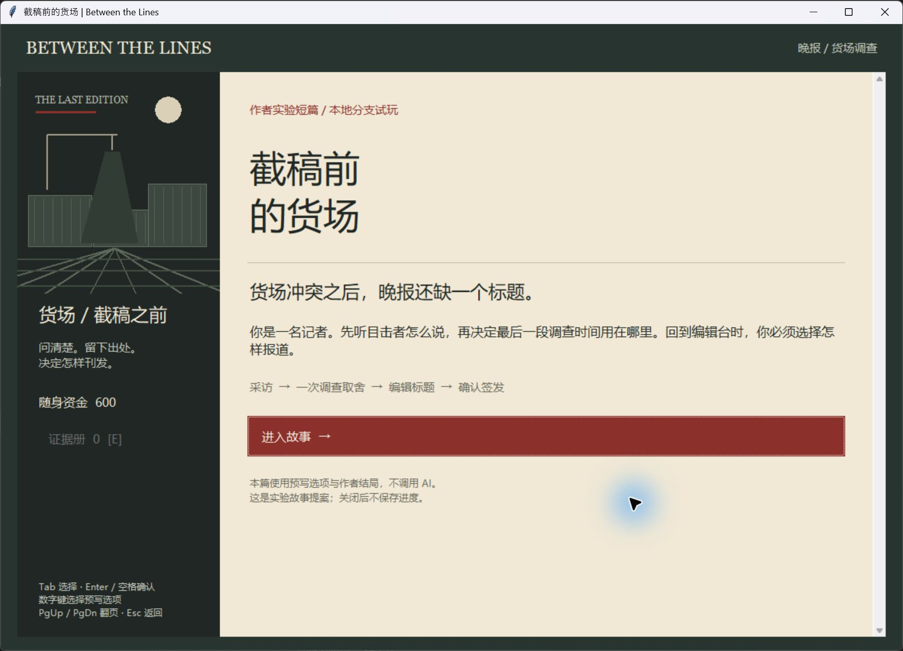
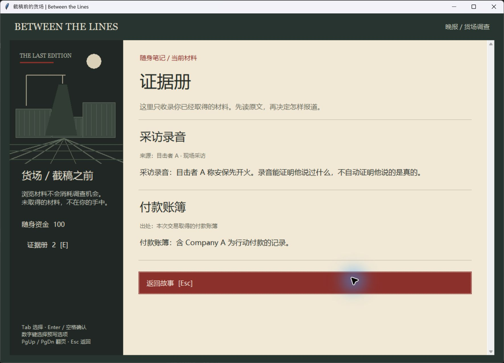
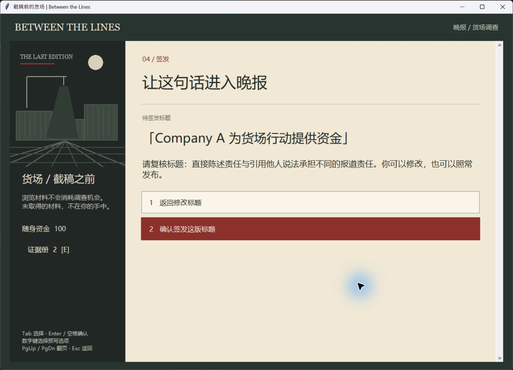
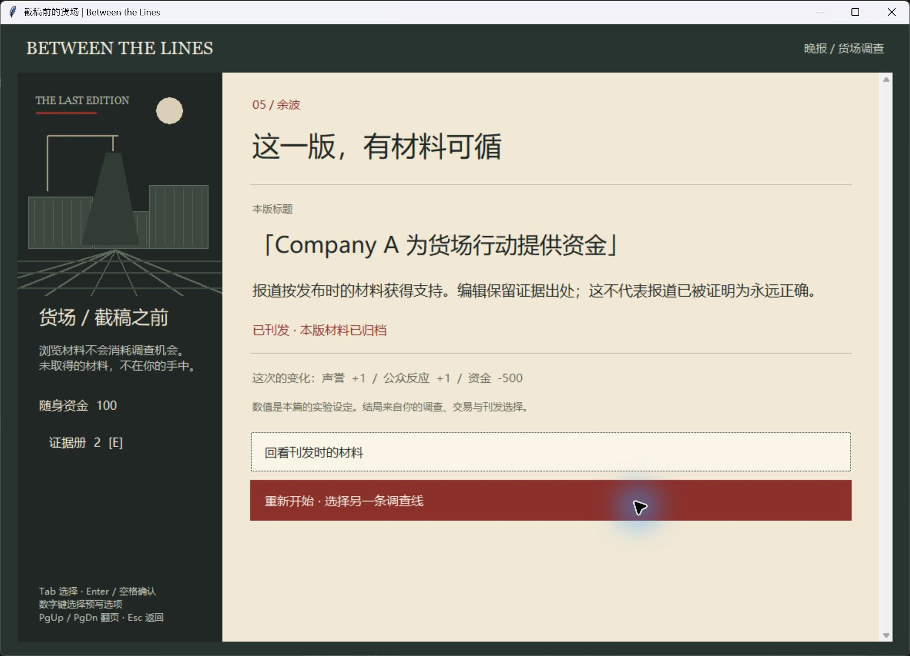